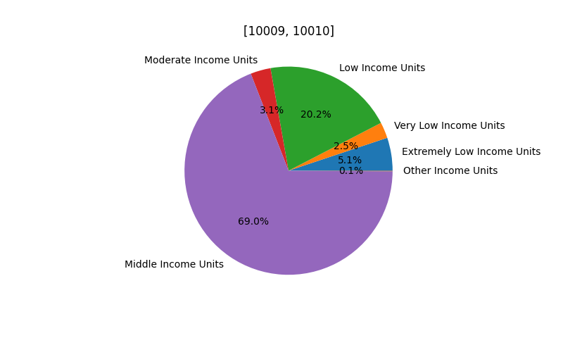
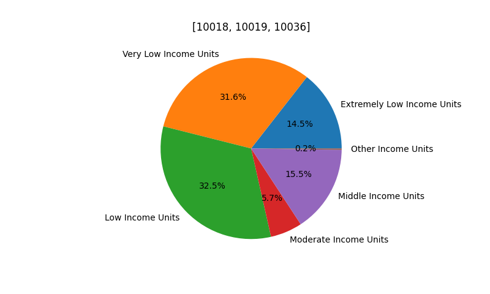
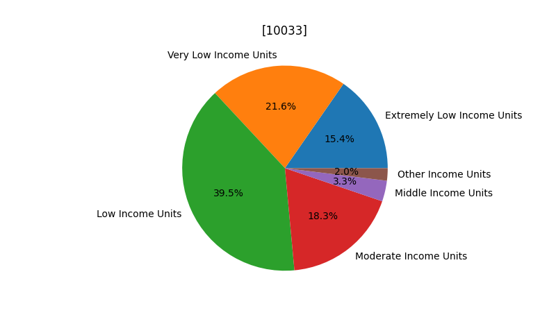

A Look Into Affordable Housing in Stuyvesant Town-Peter Cooper Village
By Nicholas Cheung
nicholas.cheung79@myhunter.cuny.edu
Hunter College High School
CSCI 127
 Fig.1 - A Map of StuyTown (considering Stuyvesant Town and Peter Cooper Village as just one neighborhood)
Fig.1 - A Map of StuyTown (considering Stuyvesant Town and Peter Cooper Village as just one neighborhood)
Basic Demographics and Statistics
Stuyvesant Town-Peter Cooper Village, also commonly known as StuyTown, is a neighborhood
located on the east side of Manhattan from First Avenue to Avenue C between 14th and 23rd Street.
Although the area north of 20th Street is technically Peter Cooper Village while the area south of 20th Street
is the official Stuyvesant Town, as a result of the two neighborhood's very similar qualities, as well as the fact that in the dataset
used for this project the two neighborhoods were grouped together, we will consider the two neighborhoods as just one "StuyTown"
neighborhood. The primary zip codes for StuyTown are 10009 and 10010. StuyTown's population in 2019 was 148,482 with
the majority, 66.1%, of the neighborhood's residents being white. Asians make up the second-highest percentage
15.5%, then Hispanics with 9.2%, next Blacks with 6.8%, and then finally the rest of the 2.4% are made up of other races.
The median household income in StuyTown is $162,350 with a poverty rate of 6.3%. Since 2006, the median cost of rent per month
for an apartment in StuyTown has increased from $2060 to $2920 in 2019.
Qualities of StuyTown
In this project, I considered Affordability, Crime and Safety, and Schooling as the three most important qualities of a neighborhood.
Overall, when assessing whether or not StuyTown would be a good neighborhood for me to live in, I would say that
StuyTown is below average. In general, Manhattan is notorious for being extremely expensive and StuyTown is no exception to this
rule. As stated earlier, in 2019, the median cost of monthly rent was $2920. This amount is by no means affordable for the majority of people. While it can be said
that StuyTown is a relatively safe neighborhood and does have some pretty great public schools nearby, simply because the cost is so incredibly high, it
ultimately brings the rating of StuyTown down. If you are someone who considers nightlife to be an important quality of a neighborhood,
StuyTown does have plenty of theaters, bars, restaurants, and other outgoing places nearby to go to, so you may want to keep that in mind. Additionally,
there are also a lot of fitness centers and health centers nearby, and commuting in StuyTown is pretty convenient, so there is also that.
Affordable Housing Data Exploration
This project was done in collaboration with two other projects who focused on the neighborhoods Washington Heights and Hell's Kitchen. When looking at an actual
Affordable Housing Dataset, we found that Extremely Low Income Units, Very Low Income Units, and Low Income Units for StuyTown make up 69.0% of all units in StuyTown.
Meanwhile, in Washington Heights, these same types of units make up 76.5% of all units, and in Hell's Kitchen, these types of units make up 78.6% of all units. From this data,
we therefore concluded that in terms of quanitiy of affordable homes, Hell's Kitchen is the most affordable neighborhood, followed by Washington Heights, and then finally
StuyTown. For a more detailed overview of all the different types of units that make up each neighborhood, refer to the pie charts below.
Note that the pie charts refer to the zipcode of each neighborhood rather than their actual name.

Fig.2 - StuyTown's Income Unit Distribution

Fig.3 - Hell's Kitchen Income Unit Distribution

Fig.4 - Washington Heights' Income Unit Distribution
In addition to a neighborhood analysis, a cross borough analysis was also performed. Using the same methodology as the individual neighborhood analysis,
Manhattan had the lowest percentage of Extremely Low Income Units, Very Low Income Units, and Low Income Units with only 73.1% of all units being comprised of these
types of units. Next was Queens with a percentage of 78.4%, then Brooklyn with 83.0%, after that, the Bronx with 93.1%, and then finally Staten Island with the highest percentage
of 93.5%. adadadadadadagds
Fig.4 - Washington Heights' Income Unit Distribution
Fig.4 - Washington Heights' Income Unit Distribution
 Fig.4 - Washington Heights' Income Unit Distribution
Fig.4 - Washington Heights' Income Unit Distribution
Fig.4 - Washington Heights' Income Unit Distribution
 Fig.4 - Washington Heights' Income Unit Distribution
Fig.4 - Washington Heights' Income Unit Distribution
Fig.2 - An Interactive Map Marking All Affordable Houses in StuyTown